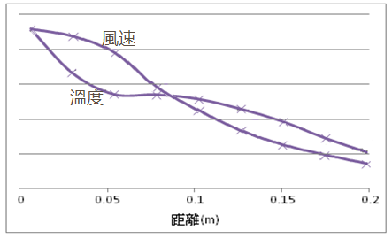
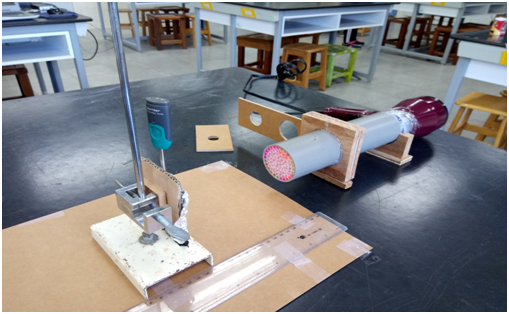
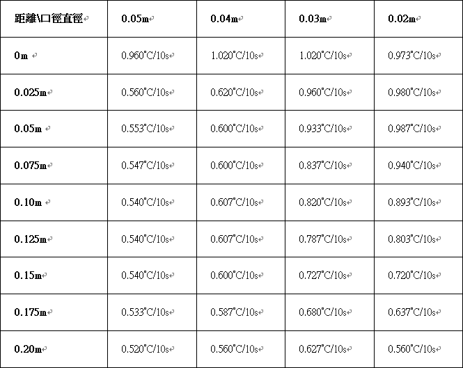
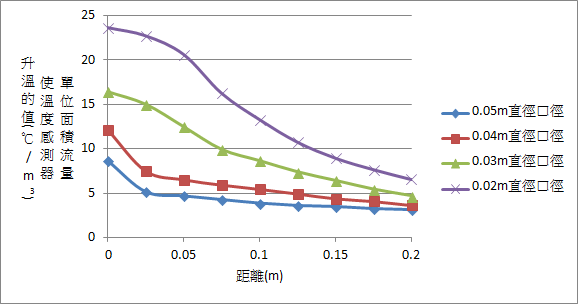
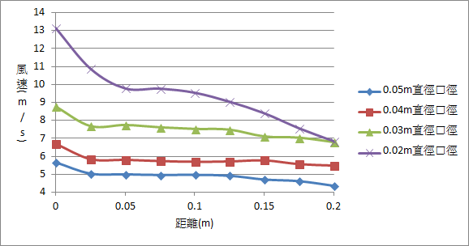

呼冷哈熱－探討造成呼氣與哈氣溫度差的原因
組員:陳子熙
摘要
同樣是對手掌吹氣，但用呼氣或用哈氣卻會有不同的感受。本研究經由實驗的設計，探討造成呼氣與哈氣的溫度感覺會不一樣的原因。根據氣體動力論以及科學常識可以得知，氣體主要由周遭環境溫度、氣體流速、溼度、壓力以及與其他氣體做交換…等因素改變溫度，並針對周遭環境溫度、氣流流速以及與其他氣體做交換當作變因進行研究。感覺到溫度不同有兩種原因，一是體感溫度的影響，二是實際溫度的不同，其中體感溫度已有換算公式(如下)，因此此研究不對其做討論。$$ T_{體感} = T_{實際} - 2 \surd v_{風} $$ 用穩定的氣流測量氣流提供的熱量以及風速，並改變距離觀察其變化。兩圖比較後發現在風速快的情況下，風速與溫度降低的幅度會相反。 
研究動機
呼冷哈熱，一個大家都知道的現象，但卻沒人真正做實驗去解釋其中的原理，曾經有書籍做出這樣的解釋－是因為絕熱膨脹造成的，但已被人證實這是錯誤的說法，因為口腔內造成的壓力並沒有大到足以造成如此明顯的溫度差。 因為已經知道風速與體感溫度的關係，因此想透過實驗，瞭解風速是否對實際溫度造成影響，又會是怎麼樣的影響。
前言
根據白努力定理，流速快的氣流會造成一低壓帶，流體會從高壓往低壓流動。因此假設若室溫度低於體溫時，吹出流速快的氣流造成的低壓帶會將周遭冷空氣吸入，使原本的氣流溫度降低，並透過設計實驗來驗證此假設是否正確。
研究方法
步驟
1. 將有圓孔的厚紙板插入水管中
2. 將出風口對齊尺的刻度零
3. 將溫感器貼著尺改變距離
4. 移動厚紙板來改變不同口徑並打開吹風機
5. 改變溫感器的位置並測量其溫度變化
6. 用風速計測量不同口徑下不同位置的風速
討論方向
1. 不同口徑大小(直徑)：0.05m、0.04m、0.03m、0.02m
2. 溫度感測器與出風口不同的距離： 0m、0.05m、0.10m、0.15m、0.20m
實驗結果
平均數據
1. 不同口徑下不同距離提供的熱量
2. 不同口徑下不同距離的風速
經運算及整理後的關係圖
1. 不同口徑下距離與單位面積流量的熱能關係
2. 不同口徑下距離與風速的關係
討論
根據表一的實驗結果，我們可以看到口徑小(風速快)的在短距離內溫度下降的幅度較低。但在0.05公尺的時候，開始急速下降，最後溫度變化趨勢見緩。而口徑大(風速慢)的在短距離內溫度急速下降，然後在0.025公尺的地方，溫度變化趨近於零。照理來說，溫度下降的趨勢應該要和風速減弱的趨勢相同，但從表一和表二中，可以發現0.02m直徑口徑的熱能-距離與風速-距離的關係有明顯的不同，當風速大幅下降時，溫度下降的幅度卻較為平緩，而把距離拉長一點，風速穩定之後，溫度反而開始驟降。在0.03m直徑口徑的趨勢線中也看得到較不明顯的相同現象，而在0.04m跟0.05m直徑口徑的趨勢線中則看不到如此的現象了。
距離較短時，因為還來不及與外界空氣反應，這裡造成溫度下降的原因是氣流本身擴散作用，距離較長時，則會開始因為白努力定理，產生的低壓帶將周遭空氣吸入，而因此壓力差的氣流流速補足原本風速的減弱，但原氣流因混著冷空氣而大幅降溫。因此我們可以得知，白努力定理造成的溫度差，遠大於擴散造成的溫度下降。
0.04m跟0.05m直徑口徑的趨勢線，它在距離0.025m以後，斜率趨近於零，也就是在距離短的時候很快就達到熱平衡了，可以得知在風速較慢時，氣流擴散的速率較高，而看不到白努力定理的作用。 根據上述結果可以得知在不同口徑大小(風速快慢)下，距離與溫度的關係，但可以從表一中發現，在距離短時，風速慢溫度下降的斜率比風速快溫度下降的斜率還要大，可以得知風速快慢與白努力定理的關係並非造成我們感受呼氣與哈氣溫度差的主要原因。尚有絕熱效應、體感溫度以及冷凝效應這三個因素需要考慮。希望未來可以將實驗做得更細，將所有變因考慮進去，並擴大控制變因的範圍，來找出一條人體感覺到吹氣與哈氣溫度差的通式。
結論
(一) 風速快時，近距離溫度受到的主要影響是氣體擴 散的作用。
(二) 風速快時，遠距離溫度受到的主要影響是白努力 定理造成的現象。
(三) 風速快時，白努力定理比氣體擴散造成的溫度變 化還要大。
(四) 風速慢時，溫度受到的主要影響為氣體擴散作用。
參考資料
維基百科白努力定理 https://zh.wikipedia.org/wiki/%E4%BC%AF%E5%8A%AA%E5%88%A9%E5%AE%9A%E5%BE%8B